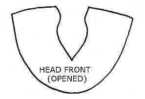
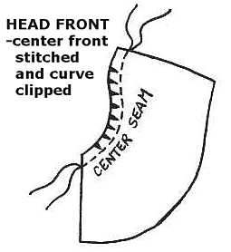
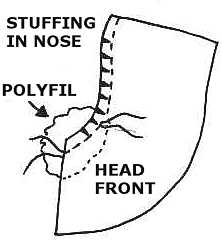
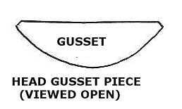
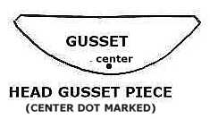
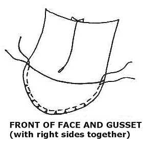
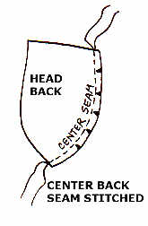
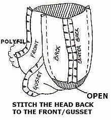
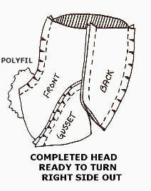
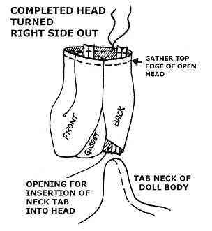

Locate your three "head" pattern pieces and cut them out according to the pattern
indicators.
You should have a head "front (one piece), a head back (two pieces), and
a head "gusset" (one piece).
When the head "front piece is opened out, it should look like this:

Mark the center at the bottom chin area with a small dot.
With the right sides together, stitch the center seam of the head front, using a small stitch length; usually 15 to 20 stitches per inch will provide good strength for a seam that will be supporting tight stuffing.
When stitched, clip the curve. It should then look like this:

Stitch a small amount of polyfil into the seam at the nose area, going over the
first line of stitching.

Find the head "gusset" piece. Opened out, this piece looks like this:

Mark the center at the bottom chin area of the gusset with a small dot.

Place the stitched "head front" and the "head gusset" right sides together.
Match the dots and baste the two pieces into position as shown:

Stitch together using a small stitch setting again, 15 to 20 stitches per inch.
Remove basting stitches if necessary and clip the curve.
This is now your "head front / gusset" section.
Find the two "head back" pieces, and stitch the center seam, again using tight stitching;
15 to 20 stitches per inch.

Clip the curve and open out the section.
Take the previously stitch "head front / gusset" section, and the "head back" section, and position
them right sides together.
Baste the two sections into position.
At the top of the head, on one side, stitch a seam that goes from the top edge to
a spot about one inch above the lower center back seam.
End your seam and repeat, starting at the top edge on the other side.
You will have left an opening at the bottom of the head, for insertion of the finished neck tab
on the doll body.
It should now look like this:

Remove basting stitches if necessary.
From the side, the head, which is now ready to turn right side out, should look like this:

Clip curves and turn the head right side out.
Fold the top edge of the head under and use button and craft thread, or dental floss to
make a strong gathering line.
Before gathering, stuff the head lightly, with just enough
polyfil to give the head shape.
You don't want to put too much stuffing in at this point.
Once the head has a shape, pull the gathering tightly and tie it off.
Secure with a few extra good, strong stitches so it won't break if you plan to stuff the head tightly.
This is what the completed head should look like, turned right side out (before you finish stuffing it):

Once you have tied off the top of the head, stuff tightly from the bottom opening.
Use your fingers and then use something smaller, like hemostats, as you position smaller bits
of polyfil into the head.
Maintain the neck opening by checking that your thumb fits into it.
This is where the neck stump of the doll body goes, and you want it to stay open as
you stuff the head into a nice shape.
I like to stuff fairly tightly, but not so tight as to prevent me from doing some needlesculpting
if I want to.
Since this is your interpretation, feel free to stuff the head the way any way you want to!
And don't forget to have fun!